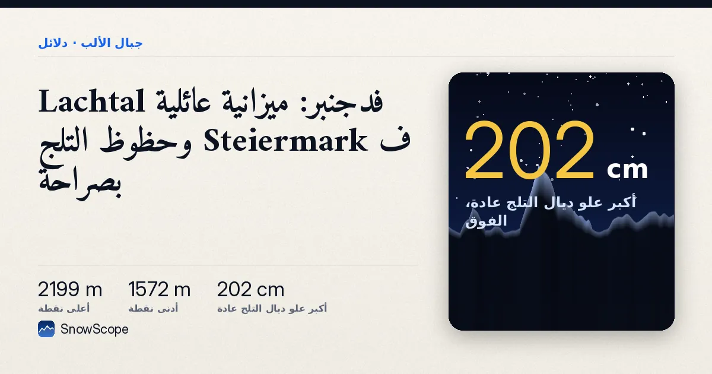

Lachtal فدجنبر: ميزانية عائلية ف Steiermark وحظوظ التلج بصراحة
Lachtal كتفرض 62 يورو باش تزلج نهار كاملة للكبير فـ 2026-27، والدراري الصغار كيتزلجو فابور. المحطة كاينة بين 1572 و 2199 م فـ ستيريا، وتقدم 25 كم ديال البيسطات و 10 مصاعد مناسبة للعيلات. فـ دجنبر، احتمالات التلج كتحسن متع أول الشهر: فـ الجهة الوسطانية (1885 م) النص الثاني ديال الشهر كايكون فـ تقريبا سبعة ديال كل عشرة شتوات فـ السجل ديالنا عندو 30 سم أو أكثر.
شوف توقعات التلج مباشرة ديال Lachtal فالتطبيق ديال SnowScopeالعلو ديال التلج، التنبيهات والخريطة 3D، فابور.
شنو التكاليف فـ دجنبر وشنو اللي كتقدر تتجاوزو
بطاقة اليوم الكاملة للكبير كتسحب 62 يورو؛ التاقة ديال 6 أيام فـ أول الموسم كتسحب 293.50 يورو. التوفير الكبير كايكون إذا عندك دراري: فـ لايست الأسعار الرسمية، أي درّي وُلّـد فـ 2021 أو بعده (دالعمر ديالهم 5 أو 6 سنين فـ هاد الوقت) كايحصل على بطاقة فابور. بـاللـي فـ عيلة فـ أثنين كبار و درّي صغير، هاد الحاجة كتدير الأسبوع الكامل أرخص بزاف مـن اللي كتدفع فـ محطات أكبر.
التضاريس كـاينة ضيقة: مصاعد صغار، بيسطات قصيرة، أكثر شـي مستويات ديال المبتدئين والمتوسطين. هاد الحاجة مناسبة للعيلات اللي بغاو يبقاو معا بعضهم والدراري كيتجنبو طابـو الصفوف الطويلة كاملة.


العلو ديال التلج اللي كتقدر تعتمد عليه فـ كل ارتفاع
Lachtal كايكون عالي بـزاف بـاللـي خاص بـهاد الزاوية ديال النمسا. فـ يوم عادي فـ 15 دجنبر، SnowScope كيوري 30 سم فـ القاع (1572 م)، 46 سم فـ الجهة الوسطانية (1885 م) و 58 سم فـ القـمة (2199 م). فـ كاينة 46 شتوات فـ السجل ديالنا، الأرض الحاقرة ما كتظهرت أبـداً فـ القاع فـ 15 دجنبر.
شكـل دجنبر كـاين أهـم بـزاف مـن اللي كتفكر. فـ الأسابيع 1–7 و 8–14، فقط 54 % و 63 % ديال الشتوات عندهم 30 سم أو أكثر فـ الجهة الوسطانية. بـدّاية الأسابيع 15–21، هاد النسبة كـتقفز فـ 72 %. أسبوع الميلاد (22–28 دجنبر) كيوصل فـ 78 %. إذا اختـرت التـواريخ الصحيحة، كتكون أكثر احتمالاً بزاف باش تتزلج عـلى قاعدة ديال تلج صحيحة.
شنو اللي تبدّل فـ الشتوات 15 اللي فاتو
دجنبر ديال Lachtal بـات أرقّ. متوسط العلو ديال التلج فـ الجهة الوسطانية نـزل من 57 سم فـ أول 15 شتوات ديال السجل ديالنا فـ 33 سم فـ الشتوات 15 الأخيرة (2011–12 لـ 2025–26). فـ القاع، النسبة ديال أسابيع الميلاد اللي عندها 30 سم نـزلت من 80 % لـ 40 %.
الشتوة اللي فاتت (2025–26) اتفرّقت فـ الحاجة: الجهة الوسطانية كان عندها فقط 9 سم فـ 15 دجنبر و 7 سم فـ 24 دجنبر. هاد الحاجة كانت رقيقة بزاف بـاش تحتاج تدبير حذّر ديال البيسطات و تلج ضعيف فـ كـاينة شي بيسطات. إذا حجزت أسبوع مـحدد فـ دجنبر، كنـت كتراهن عـلى التوقعات أكثر مـن السجل.
متاع شنو تحجز، و متاع شنو كتبقى مـرن
أول أسبوع ديال دجنبر هنا قـمار: فقط نص ديال الشتوات ديالنا عندو 30 سم فـ الجهة الوسطانية فـ هاد الوقت. الأسبوع اللي قبـل الميلاد و أسبوع الميلاد نفسو هوما رهانات أأمن، مـع 72 % و 78 % احتمالات ديال عـلو صحيح. إذا كنـت مـقدّر تحجز متّـع، و كتقدر تلغي فـ فابور، قـوم بـهاد الحاجة. استنّى لـ حتّى التوقعات كـتستقرّ، شـوف خريطة التلج فـ 1 أو 2 دجنبر، و قـرّر بـهاد الوقت.
إذا درت تحجز شـهور قـديم، قـصد 15–28 دجنبر. إذا ما كـان عندك اختيار غـير أول دجنبر، كون عندك خـطة بـديلة: إمّـا نطاق أعـلى فـ الشمال ولاّ كونـك مـستهـجّ باش تتزلج عـلى تلج رقيق فـ بيسطات مـحروسة بـحسن.
Turracher Höhe: قـريبة، لـاكن ما أحـسن فـ دجنبر
جـنوب غـرب Lachtal كاينة Turracher Höhe، محطة أخـرى صغيرة ستيرية–كاريـنـثية. كـاينة أقـلّ و كـاتاخد تلج أقـلّ فـ دجنبر: فـ يوم عـادي فـ 15 دجنبر عـندها 23 سم فـ الجهة الوسطانية (1792 م)، و فقط 39 % ديال الشتوات عـندهم 30 سم فـ أسابيع النص ديال دجنبر. بطاقة اليوم كـاتسحب 72.50 يورو و التاقة ديال 6 أيام ديال أول الموسم كـاتسحب 353 يورو، الـثـنين أغـلى مـن Lachtal.
هـاكا إذا بـغـيت رحلة عـيلة فـ دجنبر بـ ميزانية محدودة، Lachtal أرخس و فـيها تلج أكثر. الاختيار ما كـاين بـيـن هـاد الـثـنين الكـحـول الصغار، بـلاكن شـنو الاحتمالية باش تحجز كـحـول صغير كاملة فـ دجنبر كـاين فـيه تلج أقـلّ، ولاّ تقـرّب فـ الشمال و تعـلّـي شـي حـاجة كـاين فـيها احتمالات أحـسن.
نصايح للي كيتزلجو
- جيب دليل السـن بـاش الدراري: أي درّي وُلّـد فـ 2021 أو بـعـده كـايحـصـل على بـطـاقـة فـابور. هـاد الحـاجة أهـم مـن أي خـصـم للـكـبـار هـنـا.
- جـانب أول أسبوع ديال دجنبر إلّـا إذا التوقعات كـاينة غـير عادية. حجز بـاش 15–28 دجنبر بـدلاً منها، متـع 70 % ديال الشتوات عـندهم قـاعـدة صحيحة.
- إذا درت تحجز أسابيع قـديم، اختـر باقة كـاتقـدر تلغيها بـ فابور. قـرّر بـاش أول دجنبر متـع التوقعات ديال التلج كـتبقى واضحة أكثر.
- باش تلج ترّ أو تزلج فـ خـنـاديق بـاش التلج الجديد، شـوف النشرة الرسمية ديال الانهيارات ديال ستيريا أول شي فـ lawinen.report.
- إذا الجهة الوسطانية كـاينة حاقرة بـاش أول دجنبر، تحويل فـ محطة أعـلى بـدلاً مـن الرجاء الحـاجات كـتـحـسـن.
على هاد الأرقام
العلو ديال التلج فالمحطات هو أكثر تلج فالجهة الفوقانية فالتاريخ المكتوب؛ هادو تقديرات لمنطقة، ماشي قياس فنقطة وحدة. التوقعات يمكن تتبدل. ديما شوف النشرة الرسمية ديال الانهيارات قبل ما تخرج من البيست.
النشرات الرسمية ديال الانهيارات: Lawinenwarndienst Steiermark
كيفاش تستاشهد بهاد المقال
للبحث، التعليم ولا الصحافة: الأرقام والرسومات تقدر تعاود تخدم بيهم بحرية تحت CC BY 4.0 مع هاد الاستشهاد.
SnowScope (2026), Lachtal فدجنبر: ميزانية عائلية ف Steiermark وحظوظ التلج بصراحة, https://snowscope.app/blog/ar/2026/11/lachtal-december-ski-styria-budget-snow.html, تشاف ف 2026-11-14
SnowScope (Atlas Labs). (2026, November 14). Lachtal فدجنبر: ميزانية عائلية ف Steiermark وحظوظ التلج بصراحة. SnowScope snow reports. https://snowscope.app/blog/ar/2026/11/lachtal-december-ski-styria-budget-snow.html
BibTeX
@misc{snowscope2026lachtaldecemberskistyria,
author = {{SnowScope (Atlas Labs)}},
title = {Lachtal فدجنبر: ميزانية عائلية ف Steiermark وحظوظ التلج بصراحة},
year = {2026},
month = nov,
howpublished = {\url{https://snowscope.app/blog/ar/2026/11/lachtal-december-ski-styria-budget-snow.html}},
note = {Published 2026-11-14 17:24 UTC; accessed 2026-11-14}
}· CC BY 4.0 · الطريقة، الداتا والأدوات →
Lachtal: التلج والحرارة حسب العلو، هاد الشتا مقارنة مع اللي فاتت (الأدوات) →
تابع Lachtal
فابور: ميساج ملي يجي التلج، والتوقعات كل صباح.